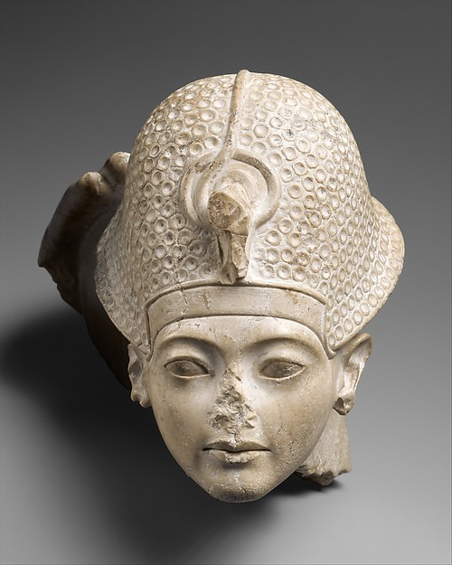
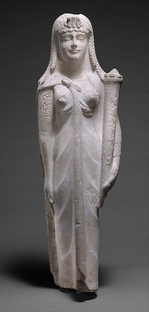
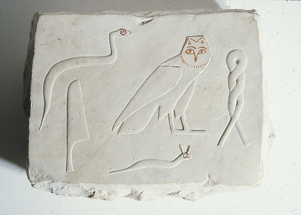
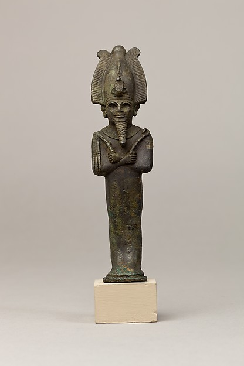

Mostra cultural · Museu digital
Uma viagem
ao Egito Antigo
Do rio que alimentou uma civilização aos monumentos que ainda nos impressionam. Explore as páginas, encontre pistas e siga a história até o Egito de hoje.
Comece com seu nome ↓Uma viagem por mais de 5.000 anos
Primeira parada · Atividade interativa
Veja seu nome em hieróglifos
Digite seu nome e descubra uma sequência de sinais para começar a viagem. A atividade é uma brincadeira visual, não uma tradução histórica.
Cada letra é substituída por um sinal do conjunto de hieróglifos; isso não mostra como um escriba egípcio escreveria ou traduziria o nome.
Continuar viagem →Bem-vindos, viajantes
Um museu para explorar
Leia as placas, observe os objetos e teste o que aprendeu. A história egípcia é longa, diversa e continua viva: esta viagem atravessa muitos períodos, não apenas a época dos faraós.
“Escaneie os QR Codes e embarque em uma viagem de mais de 5.000 anos pela história do Egito.”— convite à exposição
Etapa 1 · Escolha sua estação
Cinco caminhos pela história
Comece por uma das cinco estações temáticas. Depois, percorra as datas, observe os objetos e termine com as atividades interativas.
🌿
O Nilo e a vida cotidiana
Água, campos férteis, barcos e os ritmos do ano.
🔺
Pirâmides e monumentos
Gizé, templos, tumbas e o trabalho de construir.
📜
Escrita e crenças
Hieróglifos, a Pedra de Roseta e diferentes tradições religiosas.
⌛
Linha do tempo
Da unificação do reino às muitas mudanças da história egípcia.
🇪🇬
Egito de ontem e de hoje
Uma ponte entre o passado e um país contemporâneo.
Etapa 2 · Uma linha, muitos milênios
Algumas datas para se localizar
Etapa 3 · Objetos e imagens
O passado em detalhe
Imagens de objetos preservados em coleção. Cada fotografia leva à ficha do museu e inclui informação de licença.

Tutancâmon
Cabeça escultórica do jovem faraó · Novo Império
The Met, ficha 544690 · inventário 50.6 · imagem CC0

Uma rainha ptolemaica
A identificação com Cleópatra VII é possível, mas não comprovada.
The Met, ficha 547702 · inventário 89.2.660 · imagem CC0

Marcas na pedra
Um bloco inacabado preserva sinais e etapas do trabalho.
The Met, objeto 20.3.160 · imagem CC0

Etapa 4 · Continue a viagem pelo celular
QR Codes da exposição
Cada código abre uma página diferente. Na mostra, os visitantes também podem tocar nos cartões para abrir o conteúdo.
Os códigos já apontam para o endereço público do site. Use “Imprimir” no navegador para preparar esta área como folha de apoio.
Etapa 5 · Desafio do explorador
Hora do quiz!
Responda às perguntas e descubra quantas pistas da viagem você guardou.
Pergunta 1 de 5
A viagem continua no Nilo.
Obrigado por visitar nossa mostra cultural!